工具与实用程序
极轴对准工具
自动选星
标定助手
导星助手
查看与修改标定
手动导星
星点十字测试工具
中天翻转标定工具
彗星跟踪
锁定位置
PHD2 服务器
极轴对准工具
PHD2 提供三种不同的极轴对准工具。 它们的基本目标相同：帮助您通过机械调整，将赤道仪的赤经轴对准天极。 这些极轴对准工具与许多常见 GoTo 赤道仪中的“两星”或“三星”校准程序不同。
赤道仪软件中的这类程序通常着重优化 GoTo：通过调整转动和指向来补偿赤道仪的各种误差，包括极轴误差。
它们通常不涉及机械调整赤道仪的方位角和仰角，而这种调整正是成功摄影和导星所必需的。
三种极轴对准工具的要求和操作方式有所不同，下表作了概括。精度和速度列采用 1—3 级评分，1 为最低，3 为最高。
| 方法 | 精度 | 速度 | 可见天区 | 其他特点 |
| 传统漂移对极轴 | 3 | 1 | 东方或西方地平线附近
子午线与天赤道附近 | 转动范围最大
两轴分别测量和调整 |
| 静态对极轴 | 1 | 3 | 天极附近 | 需要辨认天极附近的星点
转动范围很小 |
极区漂移对极轴
| 2
| 2 | 天极附近
| 转动范围很小
|
最初的极轴对准方法——漂移法——仍被大多数人视为精度方面的“金标准”。 部分原因是它直接测量了您关心的量：赤经轴没有对准天极而产生的漂移。 漂移对极轴工具一次只需要一颗可见星点，也不必辨认该星的身份。 但过程可能较耗时，尤其对初学者而言，因为赤道仪的每个轴都必须单独调整，望远镜还需要在相当大的范围内转动。 如果能无遮挡地看到天赤道与子午线交点，以及东方或西方地平线上方约 30° 的区域（方位角 90° 或 270°），效果最好。 对于每晚需要匆忙架设设备，或天空视野受到限制的摄影者，这些要求可能不太方便。第二种方法——静态对极轴——采用不同方式来解决这些问题。 它有意牺牲一些精度，以加快整个过程。 只需能清楚看到北天极或南天极区域，并可同时调整赤道仪的两个方向。 因此操作更直观，也往往能更快完成。 它需要看见并辨认天极附近的几颗恒星；只要天空条件足以看到这些星点，工具就能让辨认工作变得相当容易。
第三种方法——极区漂移对极轴——可能是操作最简单的一种，但精度和速度略有妥协。它需要无遮挡的北天极或南天极视野，并能同时调整赤道仪的两个方向。用户需要输入的信息很少，因此使用起来十分简单。
以下章节详细介绍这三种方法。 建议实际尝试后，选择最适合自己需要的一种。 人们经常过分强调极轴对准精度，因此应当保持合理预期。 只要赤道仪运行正常，赤纬回差不大，PHD2 就能很好地处理大部分赤纬漂移。
但当极轴误差达到一定程度时，图像会出现无法由导星修正的场旋转。 主相机传感器越大、目标越靠近天极，场旋转问题就越明显。 您可以使用以下在线计算器估算场旋转：
http://celestialwonders.com/tools/rotationMaxErrorCalc.html
计算器可以帮助您确定，对于自己的情况，多高的精度就已“足够好”。 还要记住，任何方法的效果都可能受到赤道仪调节机构精度的限制；调整后也必须充分锁紧，避免望远镜转向不同天区时机构发生移动。
自动选星
自动选择导星星点有多种方法。最简单的是单击主窗口中“导星”图标旁的“自动选星”图标。也可以按快捷键 <Alt>S，或单击“工具”菜单中的“自动选星”。这些操作都会让PHD2扫描当前导星图像，找出最适合导星的星点。PHD2 会尽量选择亮度足够、没有饱和、尺寸合适，且不太靠近其他星点或图像边缘的恒星。选中的星点在屏幕上可能显得较暗，但这并不重要；想看清它们，只需调整主窗口的伽马滑块。自动选星几乎总能比凭显示图像人工挑选取得更好的结果，而且它是启用多星导星的唯一方式。手动选择的星点往往已经饱和或接近饱和，因而效果欠佳。无论采用哪种方式选星，都可以使用星点轮廓工具检查选中主星（最亮星点）的特性。为了获得最佳自动选星效果，应使用坏像素图或暗场库，并在“高级设置/导星”选项卡中设置最小 HFD，降低 PHD2 误选热像素的可能性。如果已知或能够确定相机的最大 ADU 值，还应在“高级设置/相机”选项卡中选择按最大 ADU 判断饱和，这样效果更好。例如，16 位导星相机的最大 ADU 通常接近 65000，8 位相机则在接近 255 时饱和。无论相机内部电子电路采用何种设计（例如 12 位或 14 位 ADC），相机驱动传出的图像像素始终是 8 位或 16 位。
要取消选星并继续循环曝光，可按住 Shift 单击“自动选星”图标，或按住 Shift 单击图像窗口内任意位置。使用子帧时，如果希望返回完整的导星图像视野，这种操作很有用。
标定助手
标定助手（Calibration Assistant，CA）是完成准确标定的最佳方式。它帮助您避免会干扰标定的操作问题。对同时受到操作失误和赤道仪问题困扰、又不清楚原因的初学者，这尤为重要。对于希望快速完成标定而无需逐一考虑操作细节的熟练摄影者，CA 也很有用。一次标定助手流程分为三个基本阶段：1）将望远镜转到最佳天区，并预先消除赤纬回差；2）启动标定并等待完成；3）评估结果并给出整体质量评价。如果评价低于“良好”，助手还会针对出现的问题提供详细解释。要使用 CA，需要通过“赤道仪”或“辅助赤道仪”连接向 PHD2 提供指向信息，通常使用 ASCOM 或 INDI 驱动；非常简单的赤道仪也可以使用“询问坐标（Ask for coordinates）”工具。如果无法通过这些连接控制望远镜转动，仍可按 CA 的指引手动指向，再让它启动标定并评估结果。
CA 只能用于交互操作；其他摄影软件控制导星时不会调用它。您可以从“工具”菜单选择“标定助手…”来启动。CA 会自行处理必要的相机曝光启停和自动选星，因此可以随时打开。如果按住 Shift 单击导星图标启动标定，而望远镜没有指向适合的天区，可能会出现以下对话框：
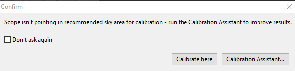
对话框中提供了启动标定助手的按钮，通常应选择它。如果改为单击“在此标定（Calibrate here）”，CA 不会运行，而是按原来的方式直接标定。CA 启动后，会出现如下非模态对话框：
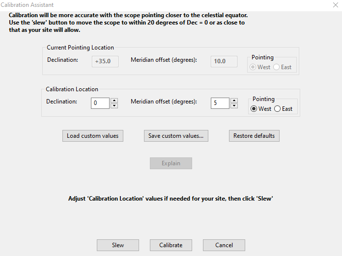
窗口顶部的说明文字会根据望远镜当前指向而变化。
转动望远镜
CA 始终建议将望远镜转到赤纬 Dec=0° 附近（天赤道），并位于子午线以东或以西 5°。选择东侧还是西侧取决于赤道仪当前指向，以避免触发中天翻转。叉式赤道仪不受中天翻转影响，可以忽略界面中的相关提示。对大多数用户，推荐的标定位置就是最佳选择，只需单击“转动（Slew）”按钮即可。当然，必须确保望远镜能够安全完成转动。如果所在地的天空视野受到遮挡，可以修改“标定位置（Calibration Location）”控件组中的数值。调整应当保守，否则会失去使用 CA 的意义。如果经常遇到相同的视野限制，可以用“保存自定义值…”保存修改，并在其他夜晚通过“载入自定义值”复用。单击“转动”会执行两次连续转动：先移到标定位置稍偏南处，再向北移动 1°，以消除赤纬回差。仅这一动作就能排除最常见的标定问题来源。转动完成后，已有标定仍然有效，直到您单击“标定”才会清除。因此，CA 也可以方便地将望远镜转到适合运行导星助手诊断或测量赤道仪表现的位置。CA 对话框会一直打开，直到单击“取消”，因此可以反复使用其中的功能。标定
单击“标定”时，CA 首先检查赤道仪导星速度、标定步长等设置是否合理。如果数值不合适，会出现对话框指出具体问题。如果标定步长错误，CA 会提供“重新计算（Recalc）”。如果导星速度太低，会建议提高到至少 0.5 倍恒星时速度。这不能在 PHD2 中修改，需要在赤道仪驱动或手控器中调整。CA 的设置检查对话框如下：
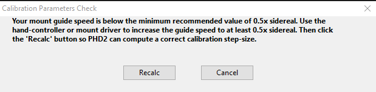
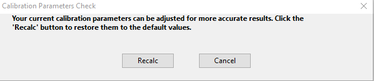
与 CA 的其他提示一样，强烈建议遵循这些建议。
检查完成后，CA 会启动正常的标定过程。如果希望观察标定，可将 CA 窗口移开。标定结束后，CA 会用多项指标评价结果，给出“差”“可接受”或“良好”的总体结论。有时受视野限制或赤道仪机械问题影响，无法达到“良好”。“可接受”意味着足以继续导星，无需过度纠结，但以后希望改善效果时应记住这些问题。“差”的结果多数情况下仍可使用，不过导星效果通常不会很好。如果标定彻底失败，例如移动量不足或丢星，应排除原因后重新标定。
如果结果低于“良好”，可单击“解释（Explain）”，查看存在的问题以及改善方法。如果已经遵循 CA 的全部指示，这些解释通常能帮助您理解“正交误差”“速度异常”等触发标定警告的情况。
单击“取消”只会关闭 CA 窗口，不会取消或停止 PHD2 主窗口中正在执行的操作。导星助手
导星助手（Guiding Assistant，GA）是一个指导性工具，用于测量当前视宁度，以及赤道仪和导星系统的总体表现。运行时，它暂时关闭导星输出，并测量随后出现的星点运动，从而帮助您观察由大气视宁度引起的高频运动。这些运动的频率远高于常规导星能够测量的频率，因此无法用常规导星修正。试图修正它们通常被称为“追逐视宁度”，往往适得其反。最好的避免方式，是设置适当的最小移动量，让 PHD2 忽略大部分高频运动。GA 还会显示其他系统特性，例如赤经和赤纬的总体漂移速率，以及赤经的峰峰值和最大变化速率。这些误差通常可以由导星补偿，但如果想改善赤道仪自身表现，例如启用赤经周期误差修正，测量这些量就很有帮助。勾选界面中的相应选项后，GA 还可以测量赤纬回差。如果不熟悉这些术语，可参阅：常见赤道仪问题
启动导星助手时，其行为取决于是否已经开始导星。如果正在导星，初始界面如下（实际数据当然会不同）：
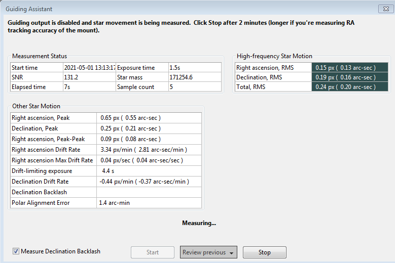
窗口最上方的字段始终显示 GA 正在做什么，以及您应采取什么操作；如果不清楚当前情况，应先看这里。在此例中，测量已自动开始，只需让它运行至少两分钟。按钮正上方的文本字段也会概述当前状态。三个按钮会随 GA 状态启用或禁用；这里“开始”不可用，因为测量已经进行。
如果尚未导星就启动 GA，初始界面会有所不同：
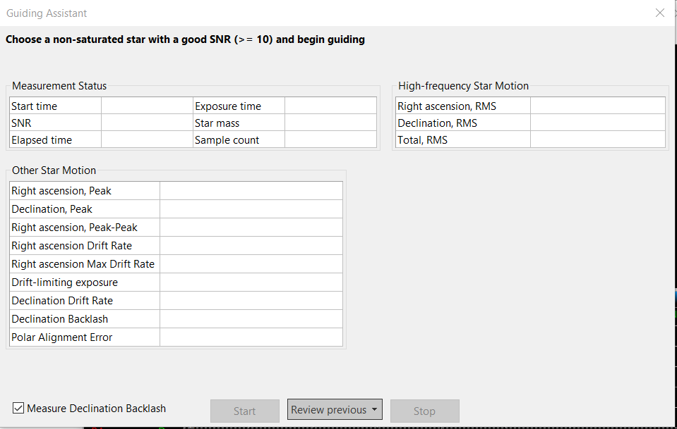
此时需要先在 PHD2 中开始导星：启动循环曝光、自动选星，再启动导星。完成后，GA 中的“开始”按钮会启用，可以开始测量。
GA 测量期间会关闭导星指令，所以星点看起来会在画面中游移，这是正常的。每取得一张导星图像，界面都会实时计算并显示统计值。采集约两分钟后，高频星点运动和极轴误差等波动较大的指标通常会趋于稳定，此时测量结果一般已有合理精度。如果希望更准确地测量极轴误差和未修正的赤经周期误差，应让 GA 运行长达 10 分钟。计算出的极轴误差也受当前赤纬影响；为得到最准确的结果，应将望远镜指向天赤道几度以内、靠近子午线的位置，也就是适合标定的天区。单击“停止”后，这一测量阶段结束。如果勾选了“测量赤纬回差”，接下来会开始回差测量（见下文）；否则会重新启用导星输出并结束采样。表格下方会显示总体漂移速率及其他计算结果，所有数值均同时以角秒和像素为单位显示。对话框大致如下：
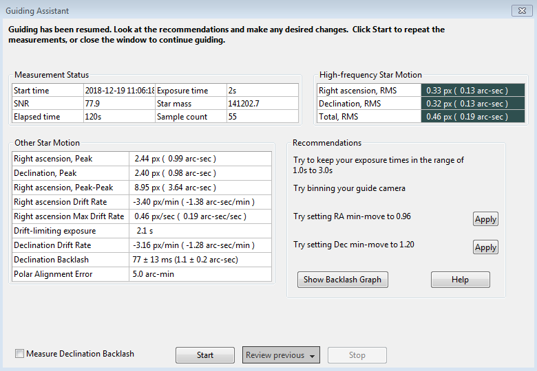
窗口右侧“建议（Recommendations）”组的内容来自统计测量结果。如果所用导星算法支持最小移动量设置，可以选择根据结果自动设置这些参数。您也可以重新测量，或关闭对话框，恢复正常导星。
测量赤纬回差 （赤纬反向延迟）
如果勾选了“测量赤纬回差”，基线测量结束后就会启动这一过程。也就是说，单击一次“停止”会结束基线测量，并开始赤纬回差测量。但如果先前采样不足两分钟，会弹出提示，GA 将继续采样，直到达到两分钟。“开始”和“停止”按钮正上方会出现一组新的状态消息，说明当前操作：
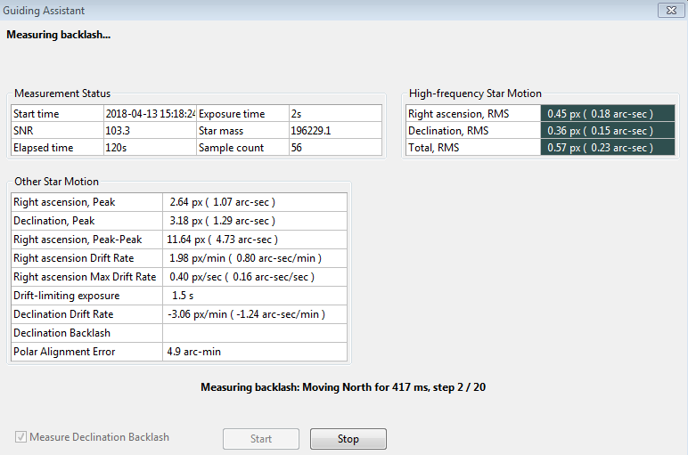
测量回差时，PHD2 会让星点先向北移动较大距离，再返回南方。过程中可能丢星；如果星点一开始就太靠近传感器北边缘，风险更大。为了提高精度，应选择北侧有足够移动空间的导星星点。如果自动选星总是选中靠近边缘的主星，可能需要手动选择单颗导星星点。如果星点因移出搜索区域而丢失，可以临时在高级设置的“导星”选项卡中增大搜索区域。对大多数配置，20 像素的搜索区域应当足够，但必须确保其中没有多颗恒星。回差测量首先尝试消除向北的回差。GA 会持续发送消除回差的指令，直到观察到星点沿一个方向显著且一致地移动。然后继续发送一组指令，使星点向北移动较大距离；这一阶段至少需要 16 秒，具体配置可能使时间更长，可通过状态消息查看进度。向北移动结束后，GA 会向南执行同样数量的步进。如果赤道仪回差较大，星点可能过一段时间才开始向南移动，通常仍可正常处理。南向步进结束后，GA 会扣除赤纬漂移的影响，尝试准确估算回差。如果赤道仪始终未能建立稳定的南向移动速度，且该速度未达到测得北向速度的 90%，则不会给出估算。这通常表示赤纬轴卡滞或严重不平衡，此时简单的回差估计既不准确，也可能没有实际意义。 即使未能给出估算，也可以单击“显示图表”查看测试过程。测试完成后，GA 会尝试将星点移回起始位置附近，并恢复导星。此时仍有丢星风险，但不会影响计算结果；按平常方式停止并恢复导星即可。与基线测量不同，回差测量开始后无需再单击“停止”：所有步骤完成后，测量会自行结束并恢复正常导星。不过，如果出现丢星等异常，可以单击“停止”，准备好后重新开始。回差测试完成后，结果显示与之前相同，但会增加赤纬回差量和测量不确定度，或显示测试失败的状态消息：
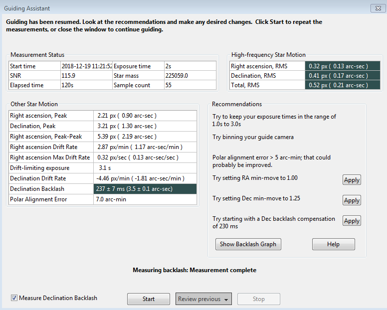
根据测得的回差量，GA 可能建议设置回差补偿值；上例为 230 毫秒。这种补偿不同于许多赤道仪控制器自带的功能，详见：PHD2 回差补偿如果测量结果小于 100 毫秒，不会给出补偿建议，因为这么小的回差通常不值得补偿。如果回差超过 3 秒，会建议使用赤纬单向导星；如此大的回差通常难以有效补偿，赤道仪也很可能无法足够快地反向，满足双向导星要求。当然，您可以根据使用经验自行判断。测量前务必关闭赤道仪软件中已有的回差补偿，否则测量结果以及 PHD2 后续的补偿尝试都会无效。如果要尝试单向导星，操作说明见：单向导星
即使测试失败，仍可查看回差测量图表，更好地了解赤道仪的表现。单击“显示图表”，可看到类似下图的结果：
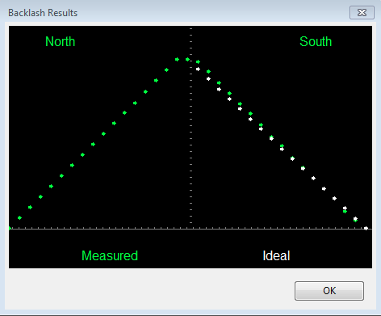
绿色点表示测得的赤纬位置，从左到右先是北向移动，再是南向返回。白色点表示完全没有回差的理想赤道仪在南向返回时应有的表现。本例绿色曲线顶部只有一小段平坦区，说明回差很小。如果赤纬回差明显增大，顶部平坦区会更加突出，如下例：
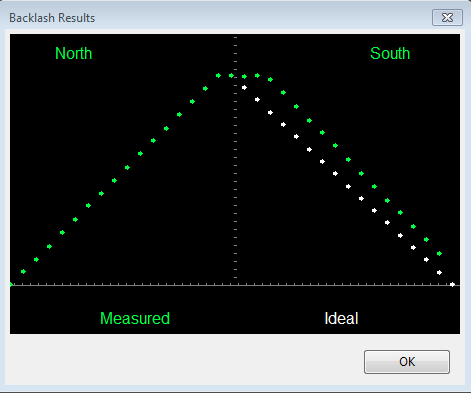
窗口底部的“查看以前结果（Review Previous）”可查看最近三次 GA 结果。如果曾进行过回差测试，这三次记录中至少有一次会包含回差测量。单击“查看”会列出当前配置文件运行 GA 的时间戳，选择所需日期和时间即可。表格数值和建议会更新为该次测量结果，应用建议的按钮也仍可使用。
查看与修改标定
大多数标定相关窗口，包括标定合理性检查，都会打开类似下图的窗口：
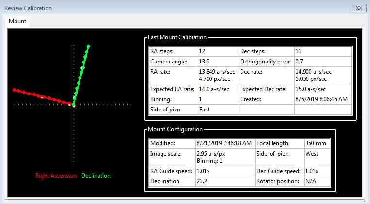
首先看左侧图表：它显示标定期间 PHD2 发送导星脉冲后，导星星点的移动情况。两条线表示赤道仪 RA、Dec 轴与相机传感器 X、Y 轴的关系；两线应大致垂直，但整体朝向不重要。数据点不可能完全等距或严格落在线上，但不应出现明显弯曲、急剧拐折或方向反转。特别是长焦望远镜，数据点往往会在线条周围散布，这是正常的。实心点（向西和向北脉冲）用于计算赤经、赤纬速度，空心点则显示向东和向南的“返回”路径。它们可以帮助判断视宁度造成的波动，以及是否有显著回差。如果在高级设置中启用了“快速回中（fast-recenter）”，东向和南向路径上的点会少得多。右侧表格列出当时已知的望远镜指向，以及与导星相关的 ASCOM 设置。如果未使用 ASCOM 赤道仪，也未指定“辅助赤道仪”，部分信息会缺失。表格还会根据本次天区和导星速度设置，列出“理想”标定应得到的导星速度。实际结果几乎不可能完全达到这些理想值，但除非出现数值可疑的警告，否则不必担心。如果标定结束时没有警告，结果一般已经够好。如果打算长时间重复使用这份标定，值得再花几分钟检查这些信息，确认过程合理、结果正常。即使经验丰富的摄影者和高端赤道仪，也可能出现不良标定，因此检查很有价值。
如果始终无法获得没有警告的标定，请阅读故障排除章节。
其他标定相关菜单项
每次标定成功完成后，标定数据都会自动保存。其他章节已经介绍这些数据的使用方法（使用 PHD 导星），包括恢复以前的标定数据，以及中天翻转后“翻转”标定。可通过“工具”菜单下的“修改标定”子菜单访问这些功能。其中还提供清除当前数据和手动输入标定数据两个选项。“清除”与高级设置对话框中的“清除赤道仪标定”复选框作用相同：下次开始导星时会强制重新标定。“输入标定数据”主要用于开发或专家操作，保留此项主要是为了功能完整。
手动导星
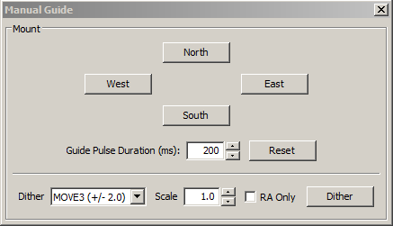
如果标定出现问题，应确认PHD2的指令确实到达赤道仪，且赤道仪作出了相应反应。也可能只是想微调赤道仪位置，或试验手动抖动。在“工具”菜单中单击“手动导星”，会打开一个对话框，让您以导星速度向任意方向移动赤道仪。如果连接了自适应光学设备，会分别显示 AO 和次级赤道仪的移动按钮。每单击一次按钮，就发送一条时长为“导星脉冲时长”字段所设数值的脉冲。按住按钮不放没有额外作用；两次单击之间应留出赤道仪响应的时间，至少等待完整的脉冲时长。默认值为高级设置中的“标定步长”。如果白天调试赤道仪或标定问题，应通过聆听而非观察来判断赤道仪是否收到了PHD2的指令。这里的目的只是确认赤道仪能否响应PHD2导星指令。由于它以很低的导星速度运动，您通常看不到赤道仪本体移动，但可能听见电机声音。也可以直接观察电机和齿轮，或在望远镜上安装激光指示器，对准较远的物体，将微小位移放大。夜间测试更适合使用此处介绍的“星点十字”测试。初学者经常把星图或摄影软件的快速转动操作，与 PHD2 完全不同的导星操作混淆。摄影软件能够正确转动望远镜，并不能说明赤道仪一定能正常接受导星控制。
抖动（dither）主要由使用 PHD2 服务器接口的摄影或自动化软件发起。不过，对话框底部的控件也可用于手动抖动，或试验抖动设置。左侧“抖动量”字段以像素为单位控制移动量，右侧“倍率（scale）”微调框可乘以一个比例系数。两者乘积“倍率 × 抖动量”决定最大抖动幅度。单击“抖动”后，PHD2 会向北、南、东、西之一随机移动，幅度不超过设定上限。勾选“仅赤经（RA Only）”后，只会向东或向西移动。手动抖动时，显然应确保主相机没有正在曝光。
星点十字测试工具
星点十字测试工具可帮助您测试赤道仪对导星指令的响应，具体见故障排除章节。虽然手动执行测试也很容易，但使用工具可能更方便。它会显示以下对话框：
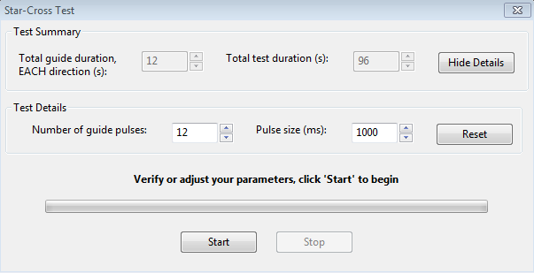
此测试假定使用主相机拍摄图像，而 PHD2 并不知道主相机的像素尺度。设置的移动量应足以在主相机图像中形成清晰轨迹，又不能大到让所有星点移出视场。默认值适用于大多数配置，也可以按需调整。关键是清楚记录星点在主相机图像中的运动，并以原始、无压缩格式保存，如 FITS 或未压缩 TIF。测试期间会循环曝光，但不会选中导星星点；个别星点移出导星相机视场并无关系。循环曝光只是为了让您快速看到赤道仪是否正在移动。中天翻转标定工具
中天翻转标定工具（向导）会自动确定中天翻转后反转赤纬输出这一设置的正确取值。向导需要进行两次标定：一次望远镜位于立柱东侧，另一次位于西侧。需要时会提示您转动望远镜（执行中天翻转）。每种赤道仪类型只需做一次。您必须仔细遵循所有指示，按照向导对话框逐步操作；忽略指示或试图跳过步骤都会使结果失效，只会浪费时间。
彗星跟踪
拍摄彗星的一种方法，是让 PHD2 把彗头当作导星“星点”，但这种方式并非总是可行。例如，彗头中心可能不像恒星，不适合导星；或者使用离轴导星器时，导星相机根本看不到彗星。
在不能直接对彗星导星时，可使用 PHD2 的彗星跟踪工具。方法是对普通恒星导星，同时逐渐移动锁定位置，以匹配彗星的运动，即跟踪速率.
有三种方式向 PHD2 提供彗星跟踪速率：
- 某些星图软件，尤其是 Cartes du Ciel，可以直接向 PHD2 发送速率；
- 您可以手动输入跟踪速率；或者，
- 在主相机中持续跟踪彗星一段时间，让 PHD2 学习该速率。
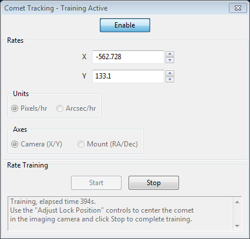
手动输入时，将单位选为“角秒/小时（Arcsec/hr）”，坐标轴选为“RA/Dec”，再输入彗星星历中的速率。如果数据来自 Minor Planet Center 网站，应选择“分别给出赤经与赤纬坐标运动（Separate RA and Declination coordinate motions）”。PHD2 会自动调整这些数值，计算天空中的视运动。
彗星速率学习过程如下：
首先将彗星置于主相机画面中心。如果摄影软件支持十字线或网格显示，应利用它准确记录彗星在传感器上的位置。准备好后，在 PHD2 中选择导星星点并开始导星，然后在彗星跟踪工具中单击“开始”进行学习。
使用摄影软件的取景和调焦功能，让主相机连续进行短曝光。随着时间推移，彗星会偏离初始位置。使用 PHD2 的“调整锁定位置”控件将它移回。您可能需要稍作试验，确认 PHD2 的上、下、左、右按钮分别会让彗星在主相机传感器上向哪个方向移动。启用“调整锁定位置”窗口的“始终置顶”，可让控件始终显示在摄影软件上方，操作更方便。
在您不断将彗星移回中心时，PHD2 会迅速学习其跟踪速率。确认跟踪已令人满意后，可单击“停止”结束学习。PHD2 仍会持续移动锁定位置以跟踪彗星，直到您使用“启用/禁用”按钮关闭彗星跟踪。
可以使用内置相机模拟器练习这一方法。在相机设置对话框中勾选“彗星”，模拟器就会显示彗星。用书签标记初始位置，再用“调整锁定位置”控件将彗星移回书签处。
锁定位置
PHD2通常将标定结束时导星星点所在的位置设为“锁定位置”。由于标定过程的具体情况不同，它可能与标定开始时的位置相差几个像素。如果想在标定后精确保持目标居中，可以使用“固定锁定位置（Sticky Lock Position）”。操作方法是先在标定之前单击导星星点，然后选择“工具”菜单中的“固定锁定位置”。标定完成后，PHD2会继续移动赤道仪，直到星点回到该固定位置。因此标定结束后，可能还会等待一段时间，让PHD2以导星速度重新定位。即使停止再恢复导星，该固定位置仍然有效，除非通过抖动等操作改变锁定点。这能确保导星星点以及通常与之对应的拍摄目标被精确定位，代价是需要额外等待PHD2移动赤道仪。
导星开始后，如果需要微调星点在传感器上的位置，可以使用“工具”菜单中的“调整锁定位置”：
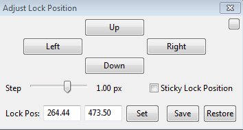
您可以以导星速度小幅移动导星星点，也可以输入新的锁定位置并单击“设置”，执行较大的移动。上、下、左、右按钮会按“步长（Step）”所示数值向相应方向移动锁定位置，并显示更新后的坐标。手动输入新位置时，如果超出当前搜索区域，可能导致丢星。需要精确定位导星星点或拍摄目标时，例如光谱观测，此工具很有用；大多数用户则不需要使用。
PHD2服务器接口
PHD2支持需要控制导星的第三方摄影和自动化软件。近年来出现了许多自动化应用，几乎都使用 PHD2 服务器接口。通过此 API，它们可以控制典型的导星操作，包括启动/停止、暂停/恢复、抖动/稳定、标定、载入配置文件等。使用此类软件时，应确认 PHD2“工具”菜单中的“启用服务器（Enable Server）”已打开。启用后，还须在操作系统防火墙中允许 PHD2 使用网络连接；通常安装 PHD2 时已完成这一配置。服务器 API 文档位于PHD2 Wiki.